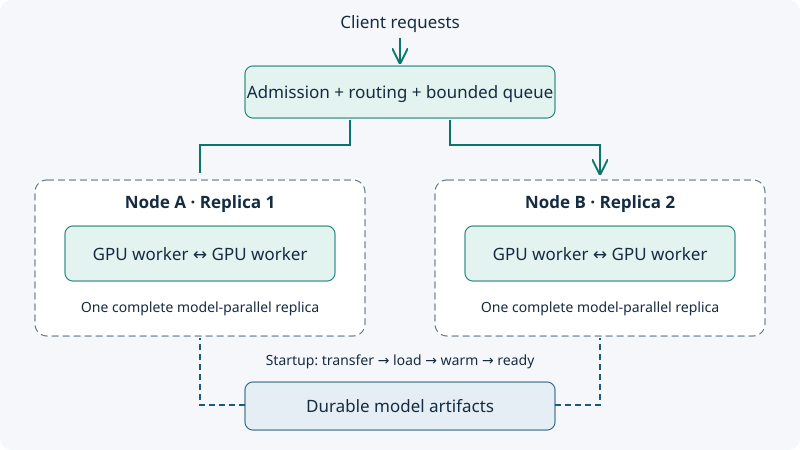

Designing inference fleets
The serving engine is selected. Now determine how many complete copies you need, where to place them, and what happens when demand changes.
By the end you can…
Distinguish replicas from model-parallel workers, size from measured capacity, and explain queueing, routing and warm headroom.
1. Count complete replicas
A replica is an independently serving model instance. It might occupy one GPU or several model-parallel workers. Four workers collaborating on one model do not necessarily provide four independently routable replicas. If one required worker fails, the whole replica may become unavailable.
Keep communicating workers close; spread complete replicas across failure boundaries. For small models, more independent replicas can be simpler than wider model parallelism. For large models or latency constraints, a multi-device replica may be necessary. Benchmark the whole replica configuration.

2. Establish useful capacity
Replay a representative input/output-length distribution with an arrival process that continues to offer traffic while responses slow down. Sweep load until latency or error targets fail. Record p95 TTFT, per-request mean TPOT at p95, completion time, streaming stalls and errors. A closed-loop client that waits for each response can hide queue growth.
Use service-target-compliant capacity: the sustained request rate that meets the full contract. Suppose a fictional two-GPU replica supports 4 requests/s on our test mix while satisfying TTFT < 1.5 s, TPOT < 50 ms and errors < 0.5%. That capacity is not transferable to a different model, prompt mix or cache state.
Prefill and decode stress resources differently. Long prompts can delay first tokens; long answers retain cache state and occupy decode slots. Separate workload pools, scheduling policies or specialized prefill/decode deployments may help at sufficient scale, but also add routing, transfer and failure complexity. Start with evidence from a simpler combined replica.
3. Watch the queue grow
4. Routing and autoscaling are connected
Prefix-aware routing can improve cache reuse but concentrate load. Even distribution can reduce queue imbalance while losing locality. Measure both cache benefit and hot-replica latency. Version, tokenizer and cache identity matter; requests with superficially similar text may not share reusable state. See the engine comparison lesson for the cache semantics.
Scale using signals related to demand and service quality: queued work, running requests, token lengths, admission rejections and latency, alongside memory and compute metrics. GPU utilization alone may stay high during both healthy service and overload. Include node provisioning, artifact transfer, model loading and warm-up in the scaling delay.
A predicted burst in two minutes cannot be handled by a replica that takes five minutes to become ready unless existing headroom absorbs it. Keep warm capacity, pre-scale predictable peaks, bound queue length and waiting time, and define admission or degradation behavior. Retries need backoff and a budget to avoid amplifying overload.
5. Operate changes as capacity events
Drain a replica by stopping new admissions, allowing in-flight work to finish within a bounded window, then removing it. A rolling update temporarily consumes spare capacity. Load and warm the replacement before shifting traffic. Evaluate cold-cache behavior, cancellation, long contexts and rollback as well as the happy-path benchmark.
Batch inference has a different objective: complete a job by its deadline with acceptable cost and correctness. It can queue longer and often use larger batches or interruptible capacity, provided progress and retries are durable. Reuse the training-style deadline planning discipline without assuming training's optimizer or collective behavior.
Work it yourself
At 12 requests/s, four replicas each sustain 4 requests/s. Two share one node. Is the fleet protected from any single-node failure?
Worked answer
No. Losing that node leaves 8 requests/s. The queue grows by 4 requests/s: 240 requests in a minute in the fluid model. Either spread replicas so a node removes at most one or provision enough capacity for the actual failure size.
Interview practice
“Why not just use GPU utilization for inference autoscaling?”
A strong answer
Utilization does not encode request length, waiting time or the latency contract. I would combine demand and queue signals with measured replica capacity and startup delay, retain warm headroom, and test the policy under bursts and failures.
Sources and deeper reading
- vLLM parallelism and scaling — implementation-specific replica and worker options.
- SGLang documentation — serving, routing and runtime behavior.
- Google SRE: handling overload — bounded queues and admission.